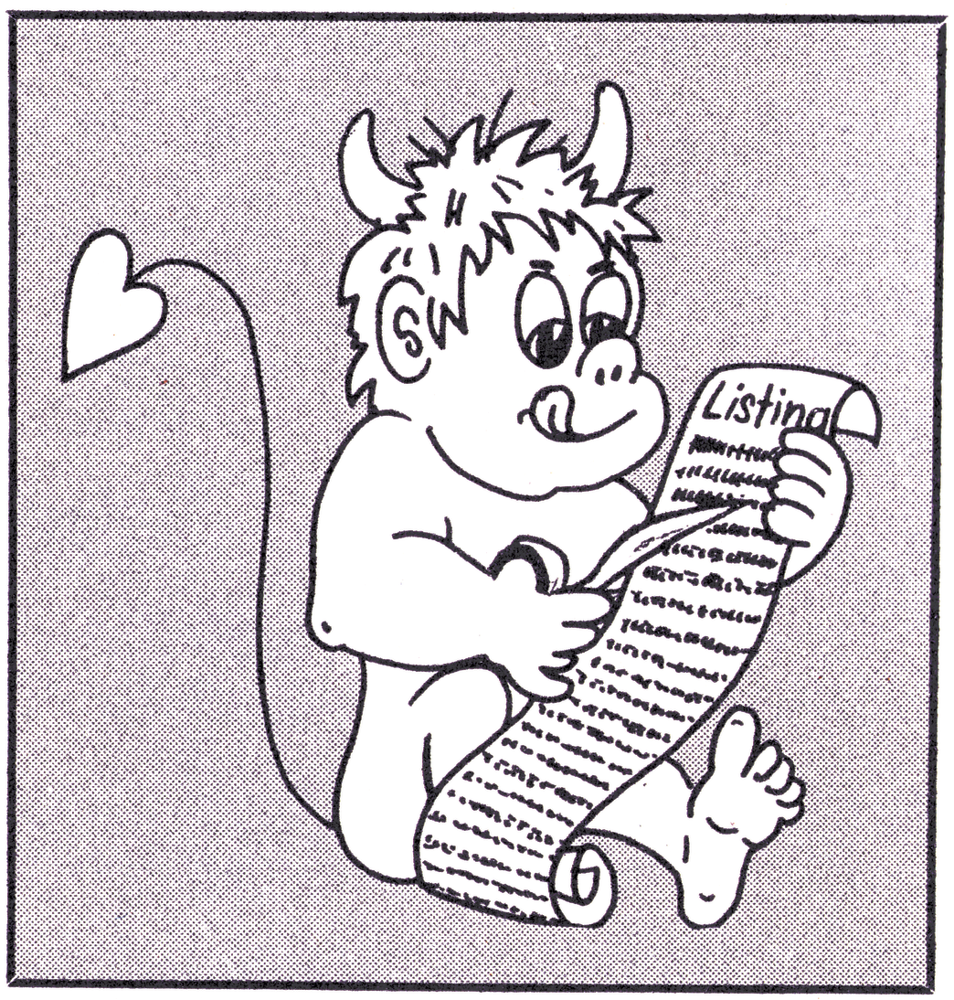

Fehlerteufelchen

Neues zu Thema Sortieren, Ausgabe 7/86, Seite 146
Im Listing 3 sind einige Zahlen unleserlich gedruckt. Hier nun die korrekten Zeilen:
c4a8 : 03 85 19 90 01 c8 84 1a 63
c4b0 : c4 1c 90 95 d0 26 c5 1b e5
c4b8 : 90 8f b0 20 a5 19 a4 1a 2a
c4c0 : c4 0d 90 08 d0 de c5 0c 63
Das Rhythm Construction Set (R.C.S.), Ausgabe 7/86, Seite 52ff
Im Listing »R C.S.« wurde eine Zeile vergessen:
0c09 : 20 b1 ff a9 6f 20 93 ff 7d
Farbenspiel, Ausgabe 7/86, Seite 76
Im Listing ist in der Zeile 20 der Befehl »POKE A,K« zu ersetzen durch »POKE A,X«.
Master Text, Ausgabe 6/86, Seite 55ff
Das Programm »Master Text« ist vollständig und fehlerfrei abgedruckt. Trotzdem noch ein Tip zur Bedienung: Master Text druckt nur dann, wenn ein Formular angelegt wurde. Dieses Formular muß sich unter dem Namen »FORMULAR F« auf der Diskette befinden. Anschließend ist im Ladeprogramm »LADER« das REM aus der Zeile 90 zu entfernen. Beim Ausfüllen des Formulars sollte man darauf achten, daß sinnvolle Werte eingesetzt werden, das heißt, daß zum Beispiel der rechte Rand nicht kleiner als der linke ist.
Checksummer 128, Sonderheft 7/86, Seite 122
In der Beschreibung muß überall anstelle von 2820 die Zahl 2850 eingesetzt werden. Gestartet wird also mit SYS 2850.
Giga-CAD, Sonderheft 6/86, Seite 9ff
Je umfangreicher ein Programm ist, desto größer ist die Wahrscheinlichkeit, daß es Fehler enthält. So hat der Fehlerteufel bei dem Programm »Giga-CAD« gleich siebenmal sein Unwesen getrieben. Hier nun die fehlerhaften Zeilen:
Listing 1.
65 IF A=0 THEN POKE 836,0
Diese Zeile ist nur erforderlich, wenn Schwierigkeiten beim Laden auftreten.
Listing 2.
120 SYS E,1:SYS N,11,15,2:RI=0:L=1:IF D<>1 THEN B=2: GOSUB 2875
125 SYS G,160,190,319,199,0,2:SYS T2,2:IF D=1 THEN SYS 25919: V=0:K=0
2620 A1=A1+KX: A2=A2+KY: A3=A3+KZ:DU=DV: IF ZV THEN SYS UM,8,0,1,D,1,0,ZV
2625 IF VF<>0 THEN H=H2*H3: F2=F4-(100/H3-100) /H2: F1=F3-(160/H3-160) /H2
Listing 4.
265 W1=COS (FI*PI/12):W2=SIN (FI*PI/12)
285 A1=A1+FX: A2=A2+FY: A3=A3+FZ
290 KE=KE+KF: IF VF<>0 THEN H=H2*H3: F2=F4-(100/H3-100) /H2:
F1=F3-(160/H3-160) /H2
Auf der System-Diskette müssen mindestens 25 Blocks frei sein, da Giga-CAD diesen Platz zum Zwischenspeichern benötigt. Auch auf der Leserservicediskette ist entsprechender Platz zu schaffen.
C 128 Basic-Listings, Sonderheft 7/86
Alle C 128 Basic-Listings aus dem oben genannten Sonderheft wurden mit falschen Prüfsummen abgedruckt. Daher sind diese Listings ohne den im gleichen Sonderheft veröffentlichten Checksummer einzugeben.
DEFFN sinnvoll eingesetzt, Ausgabe 6/86, Seite 80
Im Listing ist in der Zeile 20 der Befehl »AND 127« zu ersetzen durch »OR 128.
Grafik für Profis Teil 2, Ausgabe 7/86, Seite 150ff
Hier wurde der Source-Code der neuen Erweiterungen nicht mit abgedruckt. Dieses Versäumnis wird in der Ausgabe 9/86 im dritten Teil nachgeholt.